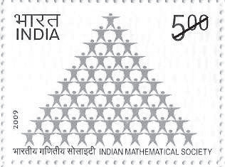

大约在1185年，婆什迦罗死于乌贾因。之后，印度的科学活动逐渐走向衰落，数学上的进展也停止了。1206年，德里苏丹国建立，印度开始接受穆斯林的统治。一个世纪之后，南方的一部分地区独立出去，接着是旷日持久的争夺统治权的斗争。相比之下，波斯的数学兴起得晚，衰败得也晚。但在兀鲁伯于1449年被处死（据说他的儿子是幕后策划人）后不久，尚武且内耗不断的萨非王朝接踵而至，波斯乃至整个阿拉伯数学的辉煌时代随之宣告结束。而与此同时，欧洲的文艺复兴之火在亚平宁半岛点燃了。
与埃及一样，早期印度拥有数学教养的人几乎全是僧侣，要么是种姓地位较高的人，这与希腊的情况完全不同，后者的数学大门对所有人敞开。印度数学家（马哈维拉除外）多以天文学为职业，而对于希腊人来说，数学是独立存在的，并且是为了它本身而进行研究的，即所谓的“为数学而数学”。印度人用诗的语言来表达数学，他们的著作含糊而神秘（虽然发明了零号），且多半是经验的，很少给出推导和证明；而希腊人则表达得既清楚又富有逻辑性，并能给出严格的证明。
相比之下，波斯人在几何学方面的才能稍强些（但与希腊人仍无法相比），尤以海亚姆的三次方程的几何求解法为代表。和印度人一样，阿拉伯数学家一般把自己看作天文学家，他们在三角学方面做出了较大贡献，前面论及的4位数学家均在天文学方面有重要建树。事实上，今天仍然沿用的许多星星的名字，如金牛座的“毕宿五”、天琴座的“织女一”、猎户座的“参宿七”、英仙座的“大陵五”、大熊座的“北斗六”，其拉丁文译名都是阿拉伯文的音译。至于代数方面，阿拉伯人的贡献也很大，在斐波那契的《算经》里，有许多问题出自花拉子密的《代数学》。

印度数学学会纪念邮票
阿拉伯人之所以重视天文学，是因为他们需要知道祈祷的准确时间（每天5次），使广大帝国内的臣民在祈祷时能够辨明方向（面朝麦加）。为此，他们不仅花费巨资修建天文台，更招聘有数学才能的人到天文台工作。这些人的主要工作是充实天文数字表，同时改进仪器、修建观察台，这又带动了另一门科学——光学的发展。可以说，阿拉伯人对数学的需要主要体现在天文学、占星术和光学方面，除此以外，他们也是出色的商人，需要计算如何分配、继承产业、合伙分红，等等。因此，他们的工作偏重于代数，尤其是计算。
在数学史上，不仅印度数学经由阿拉伯人的创造之手传递到西方，古希腊的大部分著作也如此，那是数学史上有名的翻译时代。就在前文提到的巴格达智慧宫里，包括欧几里得《几何原本》在内的数学著作被翻译成阿拉伯文并完好地保存了几个世纪以后，（在希腊原文被悉数焚毁之后）又被后来的欧洲学者翻译成拉丁文，后一项工作主要是在阿拉伯帝国的西端——西班牙故都托莱多——完成的。遗憾的是，与中世纪的中国文明和印度文明一样，阿拉伯人的数学也讲究实效，加上前面提到的其他因素，这就注定他们难以达到理论巅峰和实现可持续性发展。
最后，让我们比较一下东方智慧和希腊智慧的差异。20世纪法国哲学家雅克·马利坦（Jacques Maritain，1882—1973）认为，印度人把智慧视为解放、拯救或神圣的智慧，他们的形而上学从未取得实践科学中纯粹思辨的形式。这与希腊智慧恰好相反，希腊人的智慧是人的智慧、理性的智慧，即下界的、尘世的智慧，它始于可感触的实在、事物的变化和运动，以及存在的多样性。不可思议的是，在神圣智慧的引导下，古代印度人对数学的要求反而简单实用；而在尘世智慧的助推下，希腊乃至于整个西方却追求逻辑演绎和完美，视数学为一种独立存在。